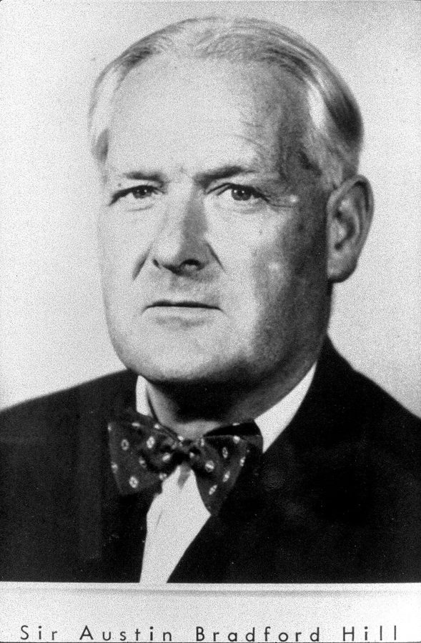
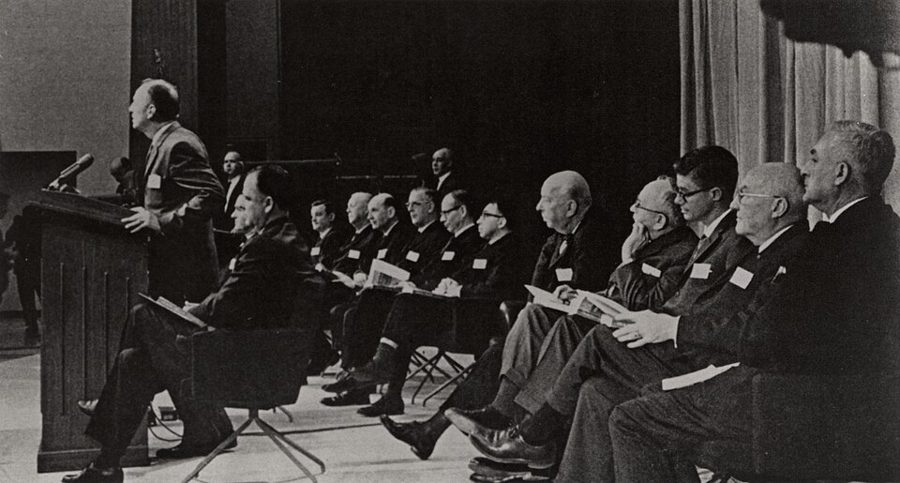

tolerable engineering approximation
… This is a tolerable engineering approximation …
工程上过得去的近似
tolerable 是「过得去、够用」。作者说「药物在人体里的反应大致一样」这个假设不严格，但对打进血液、治急症的药，拿来干活够用了。
第 7 章最后把「推广」叫作随机试验的致命弱点，这一章专讲随机试验的两个限度。一是一次做对了的试验，结果能不能搬到别的人、别的地方：作者从心理学家 Campbell 的内部效度和外部效度讲起，拿 1954 年的脊髓灰质炎疫苗和 2009 年加纳的免费看病试验作对照。二是有些问题根本没法做试验，比如吸烟会不会致癌。读的时候抓两条线：什么让结果搬得走，没有试验时又凭什么下判断。
上一页停在第 7 章第 38 段：一次随机试验真正知道的，只是这些病人、这些医生、这几天的结果。这一章接着往下挖。§1 第 11 段会回到第 6 章的参照类问题（抛硬币和巴基斯坦政变）；§2 第 21 段说天文学靠观察数据也可靠，那三个条件出自第 5 章第 17 段。这是第一部的最后一章，第 39 段的最后一句是到第二部（不做实验的社会科学）的桥。
§2 第 29 段的「九成对两成」是作者从 Ioannidis 2005 年的一篇论文换算的，那篇论文里的非随机研究一共只有 6 项。方向大体站得住，但别把这两个数当成定律带走，见「对照今天」。
一次做得无可挑剔的随机试验，结论能搬多远？做不了试验的时候，又凭什么判断因果？
读的时候带着这几个问题。不用先找答案，读完回来对照「检查一下理解」。
§1 先把第 5 章的因果密度再往上推一级：从物理到生物再到社会，越往上越难推广。接着请出 Campbell 的两种效度，然后像开药方一样列出科学推广的三招，第 10–12 段紧跟着泼冷水：三招都消不掉不确定。第 13–14 段拿疫苗作正面例子，第 15–17 段的加纳试验是反面，作者一口气编了好几种读法，第 18 段才说出用意。第 19 段收回来替随机试验说话，别漏掉。§2 换了题目，讲第二个限度。吸烟和肺癌的历史占了一大半，第 28 段突然跳到轮盘赌，是全节的转折：从「谁对了」换成「哪种方法靠得住」。后面先讲 Hill 的九条，再列吸烟一案的四个条件，最后一段只有三句，落到第二部。
作者落在哪：随机试验只保证内部效度；越靠人的行为起作用的项目，一次试验越难推广，重复也消除不了不确定。做不了试验时，吸烟一案能靠观察数据定论，是因为几个少见的条件凑齐了，而社会政策争论几乎都不具备。
这一页是原书第 8 章的两节，粗体是本站给的节名，下面是原书这一节第一段开头的几个词，在 Kindle 里搜它就能跳过去（原书的小标题也在目录里）。每节标了档：「先读」不读就跟不上全书主线，「有空」好看但跳过不丢线。读完打个勾。
先把这一页用到、作者默认你懂的几个概念讲一遍。讲的是概念本身，作者拿它推出什么，读原书时自己看。前面讲过的因果密度、隐藏条件、重复验证、风险和不确定性、参照类问题、随机分组、混杂因素和选择偏差，点进去看。
美国心理学家 Donald T. Campbell 1957 年提出的一对词。内部效度问：在这一次试验里，两组的差别真是处理造成的吗？随机分组、对照组、足够的人数，都是为它服务的。外部效度问：这个结果能推到别的人群、别的地方、别的时间和做法上吗？两者是两回事：一个内部效度无可挑剔的试验，外部效度可能很差，比如只在一所重点学校做的教学试验。医学里有一对相近的词：效力（efficacy）是理想条件下的作用，效果（effectiveness）是日常条件下的作用；在日常条件下做的随机试验叫务实型试验（pragmatic trial）。程序员的类比：在测试环境里压测通过，是内部效度；上了生产环境照样扛得住，才是外部效度。
在这一页：第 3–5 段引 Campbell；第 8 段讲效力和效果、务实型试验；第 19 段说没有内部效度，担心外部效度就没有意义。
把研究同一个问题的多项试验的结果合在一起，按各自的人数和精度加权，估一个总的效果，叫荟萃分析，也叫元分析。它有两个用处。一是几个小试验合起来，比哪一个单独都看得准。二是看各次结果之间差多少：差得比抽样误差能解释的还多，叫异质性（heterogeneity），说明效果随人群、地点或做法在变，也就是有隐藏条件在起作用。做荟萃分析之前，先要系统地把相关的试验找全，不能只挑发表了的、结果好看的，这一步叫系统综述（systematic review）。医学里专门做这件事的最有名的组织是 Cochrane（见「书里的人、研究和背景」）。
在这一页：第 7 段，作者把重复试验和荟萃分析列为推广的第一招。模拟器里「试过的几处之间最大相差」，看的就是异质性。
研究者不分组、不干预，只记录自然发生的情况，再看两件事是不是一起变：抽烟的人是不是更常得肺癌，常喝咖啡的人是不是更长寿。它和试验的根本区别在于，谁「接受了处理」不是研究者定的，是人自己选的，所以混杂因素可能混进来。常见的有两种：病例对照研究，回头找一批病人和一批没病的人，比他们过去的习惯（书里的 retrospective）；队列研究，先登记一批人的习惯，往后跟踪多年看谁得病（prospective）。观察性研究不等于没用：天文学、流行病学都主要靠它，很多问题也只能这样研究（总不能强迫人抽烟）。只是要从关联走到因果，需要更多旁证。
在这一页：第 21 段说天文学靠观察数据也可靠；第 29 段拿非实验和实验的疗效研究比；第 33 段的几十项分析都是这一类。
英国统计学家 Austin Bradford Hill 1965 年在讲演稿《环境与疾病：关联还是因果？》里列了九条，用来判断观察到的关联是不是因果：关联有多强；不同的人、不同的地方是不是一再看到；是否特定；原因是不是在结果之前；剂量越大效应是不是越大（剂量—反应关系）；机制上说不说得通；和已有知识协不协调；有没有试验证据；有没有可类比的先例。Hill 自己管它们叫「着眼点」（viewpoints），说没有哪一条是必须满足的，也不能当成打勾的清单。今天流行病学课上仍在教，通常叫「Bradford Hill 准则」。
在这一页：第 30–31 段列出九条，并说 Hill 否认因果判断能按规则走；第 33–35 段的强度、一致性、机制，就是其中几条。
先猜：一个课后识字辅导项目，在一个随机挑中的地方做了一次严格的随机试验，测出孩子的阅读成绩平均多得 5 分，而且这个数在当地是准的。拿 5 分去预测另外 39 个地方，会差多少？换成在 5 个地方做呢？5 个地方都挑城市呢？再点「挑地方做试验」验证。
一个课后识字辅导项目，考虑推广到 40 个地方（20 个城市、20 个农村）。它在每个地方的真实效果（孩子阅读测验平均多得几分）只有模拟器知道。基础效果是 3 分；「影响效果的当地条件」每多一个，各地的效果就多一份差别。条件依次是：城市还是农村、家长有没有空陪读、学校原来有没有类似的课、老师有没有经验、孩子原来的底子、附近有没有别的补习班、校长支不支持、上学路远不远。在挑中的地方做随机试验，估计只带一点抽样误差。先直接点「挑地方做试验」。
需要浏览器打开脚本才能运行。
图例：每一行是一个地方，上面 20 行是城市（蓝点），下面 20 行是农村（绿点）；点的左右位置是项目在那里的真实效果，0 那条竖线左边就是项目在那里没用甚至有害。套着圆圈的是这一轮做了试验的地方。实线是「用试过的地方的平均去预测」，虚线是 40 个地方真实效果的平均（做试验的人看不到）。下面五个数依次是：试过的地方估出的平均效果，就是拿来推广的预测；试过的几处之间最大相差多少；没试过的地方，预测平均比真实效果偏高（+）或偏低（−）多少；没试过的地方，一个一个看，预测和真实平均差多少；没试过的地方里，项目其实没用或有害的占多少。
这个模拟器的数字（基础效果 3 分、八个条件各自的分量、抽样误差）都是本站编的，只为看清道理，不是哪项研究的数据。
按在书里出现的顺序排，标题前是节号。只讲到读懂这一页需要的程度。
第 3–5 段引的是 Campbell 1957 年在《心理学公报》上讲社会情境里实验效度的论文。他是社会心理学家，更是方法论学者，和 Julian Stanley 合写的《实验和准实验设计》是评估社会项目的经典。导言里作者已经借过他的「演化认识论」；第 12 章第 15 段提到的 Campbell Collaboration（坎贝尔协作网）以他命名，专做社会政策研究的系统综述。作者说研究推广最严谨的思考出自心理学和社会学（第 2 段），Campbell 就是这句话的例子。
第 7 段说 1992 年英国国民医疗服务体系（NHS）建立了 Cochrane 协作网。按 Cochrane 自己的记载，细节是两步：1992 年 NHS 的研发项目出资在牛津成立了英国 Cochrane 中心，由 Iain Chalmers 主持；1993 年来自九个国家的约 80 人在牛津开会，成立了国际的 Cochrane 协作网。名字来自英国流行病学家 Archie Cochrane，他在 1970 年代呼吁医疗要按随机试验的证据办事。今天它出的系统综述，是医生查「某种疗法到底有没有用」时最常翻的资料之一。
脊髓灰质炎（小儿麻痹症）在 1950 年代的美国几乎每年夏天流行，很多孩子因此瘫痪。1954 年，Jonas Salk 的疫苗做了一次规模空前的现场试验，由密歇根大学的 Thomas Francis 主持，约 180 万名儿童参加，其中一部分地区用盐水安慰剂做对照。1955 年 4 月 12 日，Francis 宣布疫苗安全有效。作者拿它当推广毫无疑问的例子：有成功的疫苗先例，有说得通的生理机制，病可怕，又没有别的好办法（第 13–14 段）。
论文是 Ansah 等人 2009 年发在 PLoS Medicine 上的，在首都阿克拉附近的 Dangme West 区做：有五岁以下孩子的家庭随机分两组，一组免费看基层医疗、拿药，一组照常付费。书里说是「一种特定的儿童疾病」，论文的主要指标是中度贫血：两组都只有约 3%（对照组 3.1%，免费组 3.2%），死亡、营养等指标也相近；免费组去正规诊所多、找传统医者少。论文作者自己的解释是：多看的那点病可能太少，影响不了健康；或者路费、误工这类间接花费比诊费更要紧。第 16 段的「有些评论者」，书后注释指的是经济学家 Tyler Cowen 的博客文章。
第 16 段说，在发达国家，很多见多识广的评论者认为「再多花一笔医疗支出的边际价值接近零」。「边际」是经济学最基本的说法，问的不是「医疗有没有用」，而是「已经花了这么多之后，再多花一块钱，还能多换来多少健康」。阑尾炎手术当然有用；可在人人都看得上医生的地方，多出来的钱可能主要花在效果很小的检查和治疗上。所以「边际价值接近零」不等于「医疗没用」。这句话是作者转述别人的看法，他自己没有表态。

1950 年，美国的 Wynder 和 Graham、英国的 Richard Doll 和 Hill 先后发表病例对照研究，发现肺癌病人里吸烟的比例高得惊人；Doll 和 Hill 随后又跟踪了大批英国医生的吸烟习惯和死因。Fisher 不服。他 1958 年在《自然》上撰文提出，可能有某种遗传的体质，既让人爱抽烟，又让人容易得肺癌；没有随机分组，就排除不了这种混杂（第 26、34 段）。两人都是随机试验的奠基人：Fisher 写了《实验设计》，Hill 是 1940 年代英国链霉素试验的统计负责人（第 7 章）。
书后注释指的是美国的肺健康研究（Lung Health Study）：约 5900 名 35–60 岁、有轻度慢性阻塞性肺病的吸烟者，随机分到一个 10 周的强化戒烟项目或常规照护，2005 年报告了 14.5 年的随访：项目组的全因死亡率显著较低（每千人每年约 8.8 对 10.4 人）。随机分的是「戒烟帮助」，不是抽不抽烟，作者也特意说不可能强迫人抽烟。书里说肺癌也显著下降，本站只核到了全因死亡率这一项。

卫生总监（Surgeon General）是美国联邦公共卫生系统的最高官员。这份报告由一个顾问委员会写成，结论是吸烟是男性肺癌的病因。它是美国控烟的起点，第二年国会就要求烟盒印上警示语（第 36 段的「标签要求」）。第 30 段说 Hill 的九条是在这份报告的五条基础上扩充的；第 33–34 段的「约十倍」和「1900 到 1950 年之间一定有什么变了」，作者也是从这份报告转述的。
按节排，每节前面是分节地图里的节名。标着「每个字都认识」的，是熟词生义、习语和反话，最容易读错。灰色的那几个字是原句里的位置，在 Kindle 里搜它就能找到。
Without internal validity, in other words, there is no point in worrying about external validity.— §1 第 19 段。本站译：换句话说，没有内部效度，担心外部效度就毫无意义。
前面整整一节都在讲随机试验推不远，这一句是作者回头护住它。口气是下判断，但紧挨在前面那句带着前提：「在因果密度足够高的环境里」。容易误读成「观察研究一律没用」，作者没这么说，§2 他自己就讲了观察数据定案的例子。关键词是 point：不是外部效度不重要，是地基没打好，盖楼无从谈起。
Many public health problems share some of these characteristics. But almost no social policy debates do.— §2 第 39 段。本站译：很多公共卫生问题有其中一些特点。但几乎没有哪个社会政策争论具备。
全章最后三句里的前两句，短得像判决。注意两个限定：前一句是 some（一些特点），后一句是 almost no（几乎没有），不是「全都没有」。这句话在这里没有证明，它是作者给第二部立下的论点，第 9 章起才一步步去撑。读的时候可以记下来，读完第二部再回来看撑住了没有。
读完这一页的几节再看。下面是作者在这几节里的论点，由本站按论点重新组织，不按原书的顺序；每条下面是依据所在的段落，拿不准就回书里那几段再读一遍。
作者借 Campbell 的区分说，随机试验回答的是「这一次的差别是不是处理造成的」，这只是起码的要求。能不能推到别处，是科学里「从有限个例归纳出规则」那个老问题的一个特别难的特例。越往社会科学走因果密度越高，社会项目又没有（目前科学上理解的）生物学机制可依，周围的复杂情况本身就是因果机制。
§1 第 1–5 段作者列了三招：重复和荟萃分析；在日常条件下做务实型试验，并在多种条件下近似重复；把结果放进更大的理论。可药物方面虽然理性药物设计进展很大，仍没有牛顿力学那样完整的理论。哪怕只做一次，也得假定重复会看到差异；重复能暴露一部分隐藏条件，但做多少次也不能确定找全了，所以面对的是不确定性，不只是风险。
§1 第 6–12 段1954 年的疫苗能放心推广，因为有先例、有说得通的生理机制。干预越偏行为，这类背景知识通常越不够。作者用加纳试验说明，同一个结果换一套背景假设能读出不同的结论（他承认这些读法是简化编的），所以常常没法从单次试验推出足以指导行动的规则。但在因果密度够高的地方，没有随机对照，连内部效度都没有。
§1 第 13–19 段吸烟之争里 Hill 对了、Fisher 错了，但作者说该问的是哪种决策逻辑在一类问题上更可靠，就像押红赢了一把不说明押红是好办法。他引 Ioannidis 的论文说，在当今的疗效研究里，非实验的发现远不如合格的试验可靠。Hill 否认这类因果推断能按规则走，作者说这看来是对的，至少在流行病学里。
§2 第 26–31 段关联极强，几十项研究方向一致；最有力的替代解释（Fisher 的基因说）站不住；机制一目了然；病来势凶，拟议的措施又便宜、不太强制。作者还提醒，真正要预测的是干预的效果：公益广告、校园项目这类控烟措施，一般很难在随机试验里找到有效的好证据。他说许多公共卫生问题有其中一些特点，社会政策争论几乎都没有，区别在因果链上有许多人的心思和意志。
§2 第 32–39 段合起来：随机试验给了一块可靠的地基，但地基上能盖多高，要靠试验之外的背景知识，社会科学恰恰缺这一块。没有试验时观察数据也能定案，可条件苛刻。第二部从这里出发，讲不做实验的社会科学为什么多半达不到这些条件。
这本书 2012 年出版。下面挑出这一页里能被后来的研究检验的说法，分「书里 / 当时 / 今天」三栏，并给一个结论。结论判的是标题里「书里的说法：」后面那一句。全书的这一节汇总在对照今天。
读完作者的论点，再看它站不站得住。每一块摆出三样：主流怎么看，作者怎么看，本站的评论。最后一句是本站对这一页的总体判断。
主流看法：经济学里推重随机试验和自然实验的一派（2021 年诺奖得主 Angrist 和 Imbens 是代表）大体把内部效度放在第一位。另一边，Angus Deaton 和 Nancy Cartwright 2018 年撰文认为这是取舍：在别处做的漂亮随机试验，未必比在目标人群上做的仔细观察研究更能预测目标人群。
作者的看法：在因果密度够高的环境里，没有随机对照就连有效的试验结果都没有，谈不上推广；但他同时说，没有任何试验能自己推广（第 19 段）。
本站的评论：作者这句带着「因果密度够高」的前提，不是说观察研究一律没用，§2 他自己就讲了观察数据定案的吸烟一案。两边的分歧比看上去小：都同意要弄清效果在哪里会变，分歧在先保证「这一次」可靠，还是先保证「像目标人群」。Allcott 的研究是个提醒：愿意做试验的地方本身就可能不典型。读第 9 章的回归和第 12 章 Heckman 的批评时，带着这对取舍读。
主流看法：科学哲学里这叫 Duhem–Quine 问题（第 2 章第 26 段）：一个「没效果」的结果本身不说明为什么没效果，要靠事先定好的指标、过程数据和别的研究来缩小范围。2008 年美国俄勒冈的医保抽签实验是后来的一个对照：抽中并拿到医保的人看病多了、抑郁和医疗欠债少了，但两年里血压、胆固醇、血糖没有统计显著的改善（Baicker 等，2013）；同期《新英格兰医学杂志》的一篇评论认为随访太短、慢性病人太少，可能漏掉了效果。
作者的看法：同一个结果，换一套背景假设可以读出好几种结论；他说这些是简化编的例子，真实的理论会更细（第 16–17 段）。
本站的评论：道理成立，俄勒冈的争论正是这种情形。但别因此以为加纳那篇论文很混乱：它事先定了主要指标，两组的中度贫血都只有约 3%，作者自己的解释也很具体。病本来就少，免费看病能显出的作用自然有限。更准确的说法是：试验告诉你「这个做法在这里没测到效果」，下一步做什么，还要加上试验之外的知识。
主流看法：公共卫生界一般把吸烟一案当作观察性证据的典范。社会科学里，2021 年诺贝尔奖表彰的自然实验研究（比如 Card 对 1990 年代初新泽西州提高最低工资的研究）就是用观察数据回答政策问题，诺贝尔委员会认为这套框架已被做观察数据的研究者广泛采用；也有学者提醒，自然实验和随机试验一样，结果未必搬得到别的时间和地方。
作者的看法：很多公共卫生问题有其中一些特点，几乎没有社会政策争论具备，根本区别在因果链上有许多人的心思和意志（第 39 段）。
本站的评论：这句是作者给第二部立的论点，这一章没有证明它，要看第 9 章怎么撑。它有一定道理：吸烟的风险约十倍，而第 12 章作者会说，大多数社会项目在重复、独立的随机试验里都没有通过，信号弱得多。但「几乎没有」是全称判断，作者没有给统计。读第二部时可以自己检验：他举的反例，是不是恰好缺了这四个条件里的哪几条。
本站的总体看法：这是全书方法论部分最站得住的一章之一：一次试验推不远，后来十几年的研究反复证实了。打折扣的有两处：「九成对两成」的分母很小，别当定律；「社会政策几乎都不具备」是要靠后面几章撑的论点，不是这一章的结论。
先在心里答，再点开。答错的那题，回书里把对应那一节再读一遍。
内部效度问这一次的差别是不是处理造成的；外部效度问结果能不能推到别的人群、地方和做法。随机分组只保证前者，Campbell 说那是起码的要求。
效果受许多当地条件左右，这一次只是所有可能的重复里碰巧做的一个。没做重复，看不到差异，不等于差异不存在。
5 次试验都在城市，城乡这个条件在它们之间没变过，重复再多也暴露不了它。如果项目在农村效果小，预测会系统地偏高。这就是第 11 段说的，永远不能确定找全了隐藏条件。
同一个结果，换一套背景假设就指向不同的解释，比如医疗本来就没多大用、诊所水平差、日记不可信，各自对应不同的下一步。试验本身检验不了这些背景假设。
它把问题从「Fisher 和 Hill 谁对了」换成「哪种决策方法在一类问题上更靠得住」。一次结果对了，不说明方法可靠。
关联极强，几十项研究方向一致；Fisher 的基因说解释不了几十年里肺癌暴增；机制一目了然；病来势凶，拟议的措施便宜又不太强制，按 Hill 的说法证据门槛可以低一些。
我们关心的是干预：一项控烟措施能让肺癌少多少。公益广告、校园项目这类措施，一般很难在随机试验里找到有效的好证据；在多项试验里证明有效的是尼古丁替代疗法加上细致的辅导。
想一想：你在一个团队、一个产品或一批用户身上验证过的做法，搬到别的团队、别的市场时失灵过吗？当时有哪些「当地条件」，是你在原来的地方从没想过要看的？
读过又忘了，从这里想起来。挑的是这一页最值得记住的故事、人和说法，不按原书顺序；每条后面是节号，想细看就回书里那一节。全书各页的这一节都收在全书回顾。
一句话：随机试验保证的是这一次可靠，搬不搬得走要靠试验之外的知识；做不了试验时观察数据也能定案，但要像吸烟一案那样几个条件凑齐。
有人押红第一把就赢了，不说明押红是赚钱的好办法。吸烟之争里 Hill 对了，但作者说该问的是哪种方法在一类问题上更靠得住。
§21954 年的疫苗结果可以直接推广：有先例，机制说得通。加纳的免费看病试验没测到健康改善，作者编了好几种读法，说明结论取决于背景假设。
§1作者说所谓「软」的社会科学处理的偏偏是最难的问题，所以关于推广最严谨的思考出自心理学和社会学，内部效度、外部效度就是心理学家 Campbell 起的名。
§1哪怕只做了一次试验，也得假定重复会看到差异：所有可能的重复都在那里，我们只是碰巧做了其中一个。
§1吸烟者得肺癌的可能约是不吸烟者的十倍，几十项研究一致，基因说站不住，机制一目了然，措施又便宜。作者说社会政策争论几乎没有这样的条件。
§2